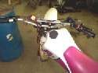
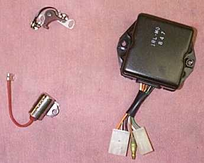
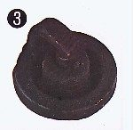

The engine misses, stutters or loses power at some speed or load. A fuel fault (lean or rich mixture) and an ignition fault (no spark at some moments) feel the same on the road. Finding which one it is saves parts and time, because the repair is completely different.
Is it safe to ride?
A mild miss can be ridden slowly to a workshop. Stop if the engine stalls in traffic or smells strongly of fuel.
Quick checks first
- Does it happen cold, hot, or both?
- Does it happen at one throttle opening or rev range?
- Is the plug cap pushed on firmly and the plug clean?
- Is there enough fuel, and is the tap on?
Diagnose it step by step
1Does the miss happen in the same place every time (a certain speed or load)?
- Yes: note it and go to step 2.
- No, random: check the connections: Cuts out randomly, then restarts.
2Clean and check the plug.
- Remove it, look at it, set the gap and refit: Remove, check, gap and fit a spark plug. A fouled or worn plug causes many misfires.
- Still misses: go to step 3.
3See the spark during the miss.
- Use a timing light on the plug lead, taped where you can see it, and ride to the fault: Tell an ignition misfire from a fuel misfire with a timing light.
- Flash stays bright and steady at the miss: spark is fine, so the fault is fuel or air. Go to step 4.
- Flash drops out at the miss: the fault is ignition. Go to step 5.
4Fuel and air fault.
- Carburettor: Clean the carburettor, Check the fuel tap, lines and flow, Clean or replace the air filter.
- Fuel injection: Read engine fault codes and Check the fuel injector.
5Ignition fault.
- Test the ignition coil and plug cap, then Test the ignition pick-up.
- Old bike with points: Points ignition runs rough or misses.
- Misses only when hot, then returns when cool: Ignition cuts out when hot.
Causes, most likely first
| Cause | How to confirm | Fix |
|---|---|---|
| Worn or fouled plug | Plug looks wrong, or the gap is wide | Remove, check, gap and fit a spark plug |
| Blocked carb jet or dirty fuel | Light stays steady at the miss | Clean the carburettor |
| Weak coil or plug cap | Light drops at the miss | Test the ignition coil and plug cap |
| Pick-up or CDI fault | Light drops, coil tests ok | Test the ignition pick-up |